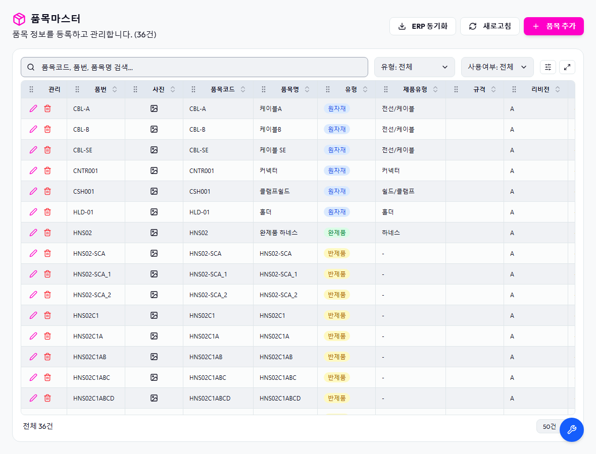
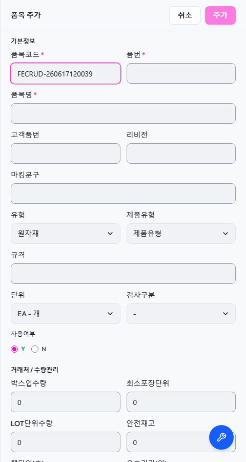
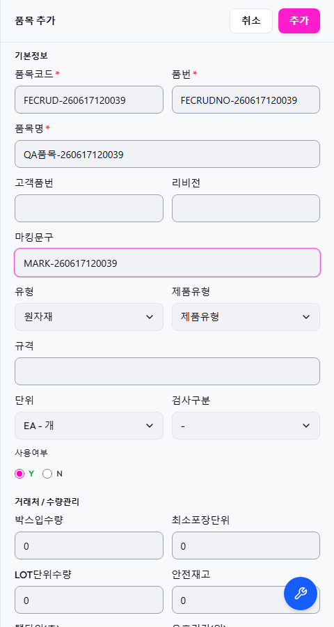
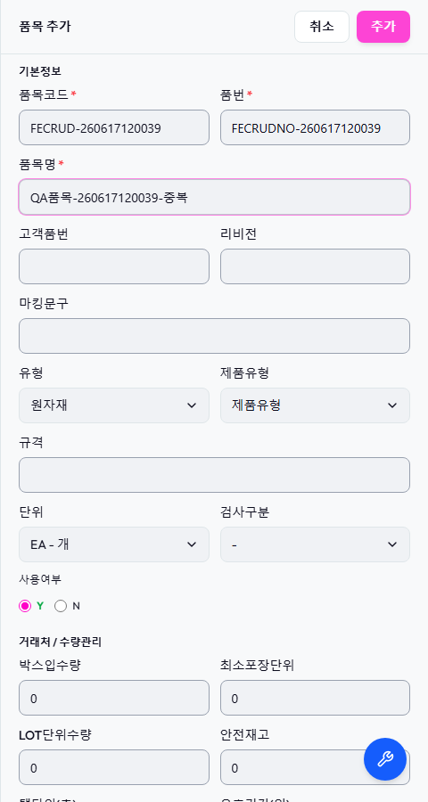
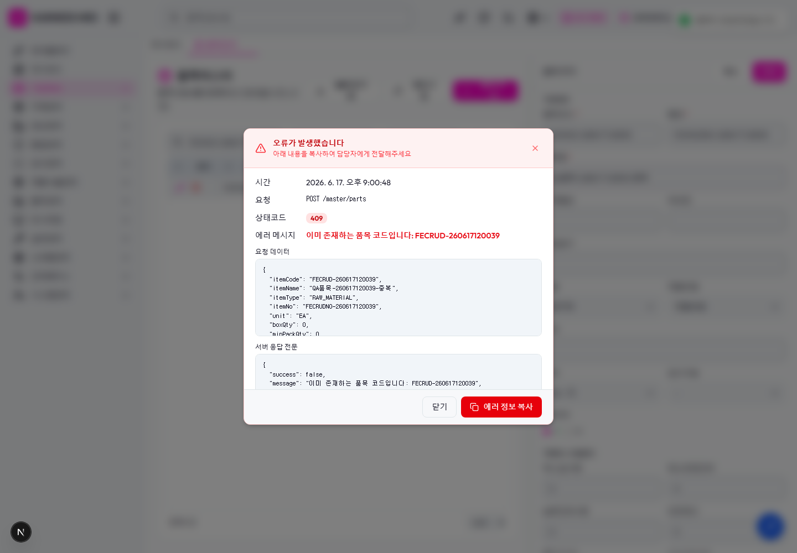
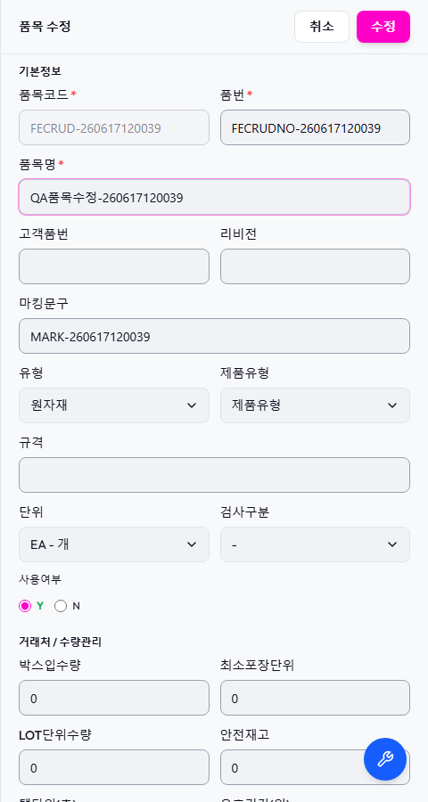
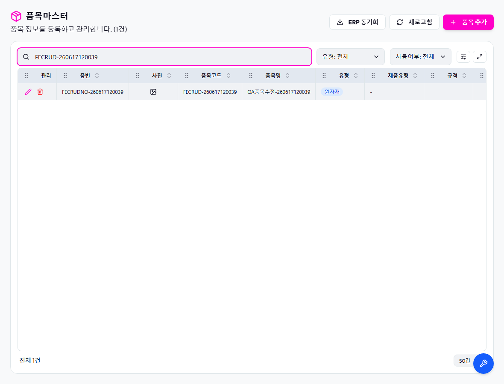
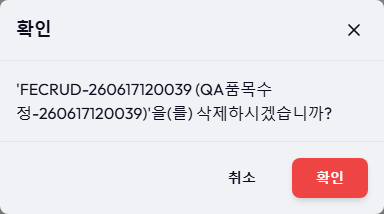
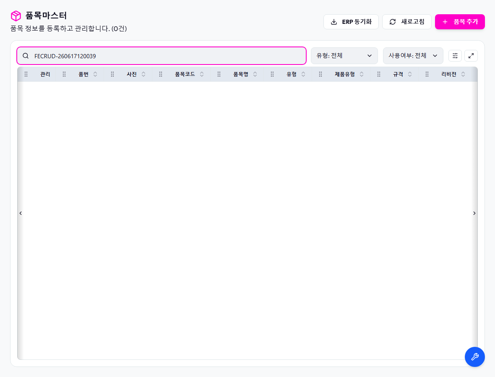

결과: PASS — 총 7개 케이스 중 PASS 7 / FAIL 0
1. 화면 로드 PASS
| 유형 | load |
|---|---|
| 예상 동작 | 품목마스터 목록 화면이 정상 렌더링되어야 한다 |
| 실제 결과 | "품목마스터" 노출 확인 |
{kind=link}

2. 비정상: 필수값(품번·품목명) 누락 검증 PASS
| 유형 | create-invalid |
|---|---|
| 예상 동작 | 품목코드만 입력하고 품번/품목명을 비우면 제출(추가) 버튼이 비활성이어야 한다 |
| 실제 결과 | 필수값 누락 → 제출 버튼 비활성(검증 동작 정상) |
{kind=link}

3. 정상: 신규 품목 등록 PASS
| 유형 | create |
|---|---|
| 예상 동작 | 필수값을 모두 채우면 등록되고 검색 결과에 품목코드가 노출되어야 한다 |
| 실제 결과 | 등록 후 검색 결과에 "FECRUD-260617120039" 노출 |
{kind=link}

{kind=link}
4. 비정상(RED): 동일 품목코드 중복 등록 PASS
| 유형 | create-duplicate |
|---|---|
| 예상 동작 | 이미 존재하는 품목코드로 등록 시 409 응답 + 오류 모달이 표시되어야 한다 |
| 실제 결과 | 중복 등록 → 오류 모달 표시 + HTTP 409 확인 |
{kind=link}

{kind=link}

5. 정상: 품목명 수정 PASS
| 유형 | update |
|---|---|
| 예상 동작 | 행 수정으로 품목명을 변경하면 검색 결과에 변경된 이름이 노출되어야 한다 |
| 실제 결과 | 수정 후 "QA품목수정-260617120039" 반영 확인 |
{kind=link}

{kind=link}

6. 정상: 품목 삭제 PASS
| 유형 | delete |
|---|---|
| 예상 동작 | 삭제 확인 모달에서 확인하면 행이 제거되어야 한다 |
| 실제 결과 | 삭제 확인 모달 → 확인 → 행 제거 |
{kind=link}

{kind=link}

7. 정리 검증: API 조회 시 임시 품목 부재 PASS
| 유형 | api-verify |
|---|---|
| 예상 동작 | 삭제 후 API 조회 결과에 임시 품목코드가 존재하지 않아야 한다 |
| 실제 결과 | API 조회 결과 임시 행(FECRUD-260617120039) 부재 확인 — 정리 완료 |